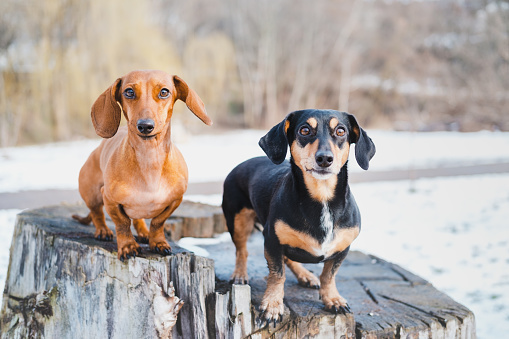
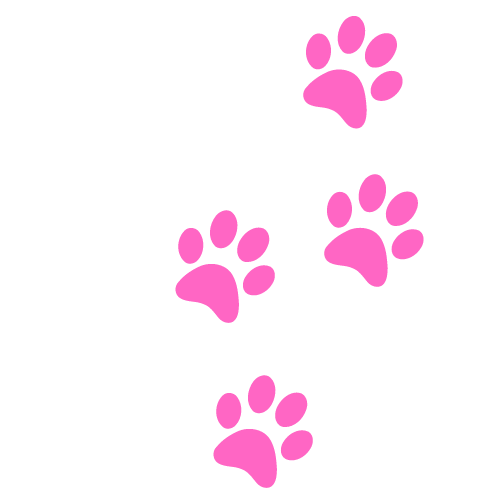
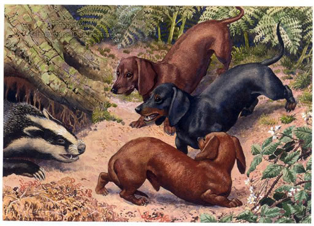
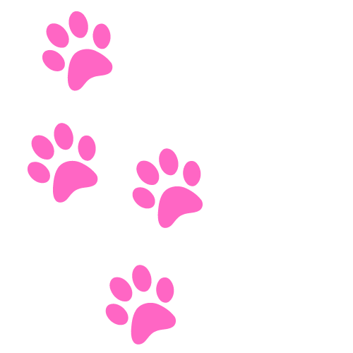
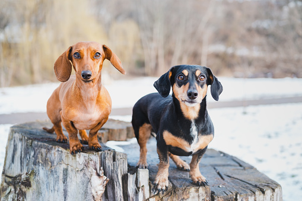
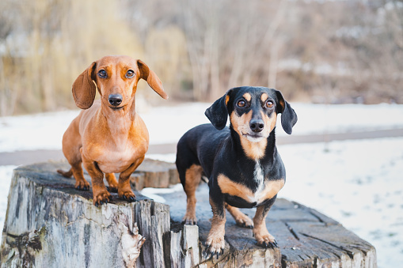

Стандартен – 7 – 14.5 кг; Малък – до 5 кг; Заешки – около 3.6 кг
Едноцветни; Двуцветни; Шарени
12 – 15 години
Дакелите са кучета следотърсачи, които са били създадени най-вече за лов на язовци и други тунелни
животни като зайци и лисици. Дори групи от по няколко Дакела са били използвани за проследяване на
глигани. Днес тези кучета се отглеждат най-вече като домашни любимци и кучета компаньони.Името на
породата Дакел (Dachshund) произхожда от това, за което тези кучета са били предназначени, а именно
лов на язовци (Dachs – язовец и Hund – куче). Не си мислете, че куче с такива размери не може да лови
язовци. Не позволявайте на Дакела да ви заблуди или както е казал легендарният американски литературен
критик и журналист Хенри Менкен това „половин куче високо и куче и половина дълго” е достатъчно силно да
се
справя с язовци, зайци и лисици.

Важно за Дакела
• Дакелите могат да бъдат доста упорити и понякога трудни за обучение.
• Това са интелигентни кучета с независим характер и закачлив дух. Това ги прави доста палави.
При обучението бъдете уверени, търпеливи и последователни.
• Тъй като са били отглеждани за лов, те могат да проявяват свързани с този си инстинкт
поведения.
Тъй като са предназначени да копаят, инстинктът им може да ги подтикне да изровят вашите цветя.
Било е необходимо да бъдат упорити преследвачи, а това може да се прояви като безмилостно и
неуморно досаждане докато не им дадете някое вкусно лакомство. Освен това те са били отглеждани
не само да улавят, но и да убиват плачката си – във вашия дом плячката на вашия Дакел ще бъдат
неговите играчки, а негова задача ще бъде ефективно да ги „убива” една след друга ?
• Имайте в предвид, че Дакелите имат дълбок и силен лай, за куче с такива размери. Освен това
обичат да лаят.
• Ако не бъдете предпазливи, вашият дакел може да натрупа допълнителни килограми и да стане
мързелив, което ще окаже допълнителен натиск върху дългият му гръб. За това ваша задача ще бъде
да
контролирате храната и да поддържате теглото му в здравословните граници.
• Както вече споменахме, Дакелите са склонни към дискови хернии, което може да доведе до
парализа. За това не ги поставяйте върху високи мебели, и не им позволявайте да скачат от
високо.
Също така когато ги вземате на ръце, придържайте гърбовете им.
• Те могат да бъдат подозрителни към непознати, за това е важна социализацията още докато
са малки.
Описание на породата
Размери
Стандартните Дакели от всички разновидности (късокосмест, дългокосмест и твърдокосмест) са с тегло
между 7 и 14.5 кг.
Малките Дакели (от всички разновидности) са с тегло под 5 кг.
Така наречените заешки Дакели са с тегло около 3.6
Космена покривкаТвърдокосмест Дакел - снимка
Козината на късокосместите Дакели е къса и лъскава. Едноцветните късокосмести дакели са най-често с
червеникав или кремав цвят. При двуцветните се срещат черен, кафяв и светлобежов цвят. При някои се
наблюдават пъстри петна по козината.
Дългокосмест Дакел - снимкаПри твърдокосместите Дакели външния слой на козината е с твърди, плътни и
къси косми, а подкосъмът е по-мек. Твърдият слой козина е по цялото тяло с изключение на челюстта,
ушите и веждите. Цветовете са същите както при късокосместите Дакели.
Дългокосместите са с дълга, лъскава и вълнообразна козина, което им придава елегантен вид. Срещат се
в същите цветове като останалите два типа Дакели.снимка на Дакел с различни очи
Характерно е, че дакелите с по-светло оцветяване могат да бъдат със сиви, зелени или сини очи вместо
различни нюанси на кафявото. Също така, някои могат да бъдат с различен цвят очи. А в по редки
случаи като при пъстрите дакели (тези с различно количество бяло оцветяване) могат да имат едно
кафяво и едно синьо око.
Грижи
Шарен Дакел - Това е порода, която се поддържа сравнително лесно. Освен ако не се отъркалят в
нещо навън, не се нуждаят от често къпане.
Късокосместите може да се избърсват с влажна кърпа, за да ги поддържате чисти. Зимно време, когато
температурите са ниски, може да се нуждаят от пуловер за да ги топли.
Твърдокосместите се нуждаят от изчеткване, също и от подстригване веднъж или два пъти годишно.
Дългокосместите изискват малко повече грижи и е необходимо редовно разресване, за да се
предотвратяват сплъстявания на козината. Те се нуждаят и от по-често къпане.
Независимо от вида и големината на вашия Дакел трябва да се обръща специално внимание на ушите. Тъй
като са провиснали надолу те са подходяща среда за развитието на гъбички, бактерии и акари, за това
е необходимо да се почистват веднъж седмично.
Също така ако вашият Дакел не износва достатъчно ноктите си е добре да се режат веднъж месечно.
Колкото по-рано кученцето разбере, че това е необходимо да се прави, толкова по-малко стресиращо ще
бъде за напред.
Винаги проверявайте вашият любимец за, рани, обриви, възпаления по кожата или ушите. Очите трябва да
са ясни и без зачервявания. Това ще ви помогне да забележите потенциални здравословни проблеми по
рано.
Деца и други животни



Дакелите са добри с децата от собственото си семейство, ако бъдат запознати от рано. С други деца, може
да не са толкова добронамерени, за това бъдете внимателни.
Поради издълженото си тяло, Дакелите лесно могат да бъдат наранени при невнимание. За това учете децата
когато си играят с кучето да не го вземат на ръце, а да си играят като са седнали на пода. Децата не
трябва да притесняват кучето докато спи или докато се храни. Не трябва да оставяте кучето с малки деца
без надзор.
Дакелите обикновено се разбират добре и с други домашни любимци, особено ако са израснали заедно.


 
